Руководство пользователя
Содержание
1. Общее
Sirius - приложение для хранения и обмена личными данными с другими участниками, в соответствии с концепцией Self sovereign identity. Вы можете использовать Sirius как приложение мессенджер, с возможностью работы в команде а также для организации работ посредством встроенного органайзера.
Все данные приложения хранятся в защищенном хранилище, а также базы даных приложения дополнительно зашифрованы специальным алгоритмом, таким образом что даже если кто-то скопирует ваши данные, он не сможет никоим образом их прочитать.
Файлы и сообщения пересылаемые в секретных чатах передаются по зашифрованному каналу связи, ключи которых хранятся в защищенном хранилище.
1.1 Авторизация
Ваши документы хранятся в хранилище документов, локально на устройстве. Все ваши данные шифруются специальным алгоритмом, на основе пинкода, который вы придумываете, и которой хранится только у вас в голове.Мы не сохраняем и не имеем доступа к вашим личным данным каким либо образом.
Для начала работы приложения вам необходимо авторизоваться с помощью номера телефона. Вы можете выбрать страну кликнув по полю 1 или можете ввести префикс вручную в поле 2. Далее введите номер телефона в поле 3. Чекбокс 4 указывает сможет или не сможет приложение иметь доступ к вашей телефонной книге,необходимой для синхронизации контактов. Если она включена, контакты которые зарегистрированы в системе Sirius отобразятся у вас во вкладке "Контакты". Нажав ссылку 5, вы можете ознакомиться с нашей Политикой конфиденциальности. Заполнив все поля, нажмите 6.
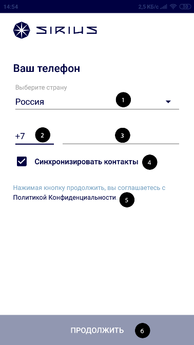
- 1.Выбор страны
- 2.Международный префикс номера телефона
- 3.Номер телефона
- 4.Выбор синхронизации контактов
- 5.Ссылка на "Политику конфиденциальности"
- 6.Кнопка "Продолжить"

На указанный номер телефона прийдет код посредством СМС. С помощью 2 введите код, который пришел в СМС, контролируя количество символов с помощью 1. Если СМС с кодом не пришло в течении указанного времени, нажмите 3. Вам прийдет СМС с новым кодом повторно. После заполнения последнего символа, проверка введенных данных произойдет автоматически.
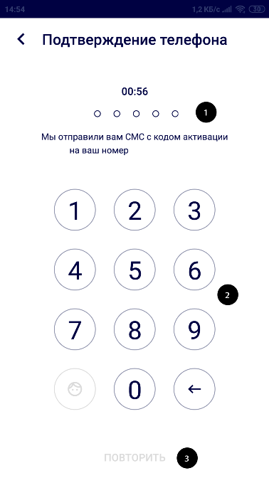
- 1.Место ввода кода из СМС
- 2.Клавиатура ввода Пин-кода
- 3.Кнопка "Повторить"
Если на вашем устройстве не имеется локального защищенного хранилища привязанного к вашему аккаунту, вам надо придумать и ввести с помощью 2 код,контролируя через 1 количество введенных символов. Этот код вам надо запомнить, без него вы не сможете войти в приложениие. После завершения нажмите 3.
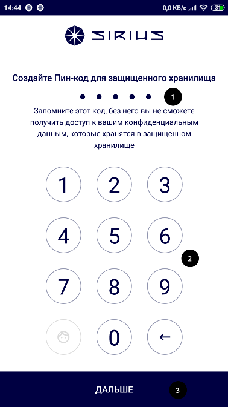
- 1.Место ввода Пин-кода
- 2.Клавиатура ввода Пин-кода
- 3.Кнопка "Далее"
Если на вашем устройстве имеется локальное защищенное хранилище привязанное к вашему аккаунту, вам надо ввести с помощью 3 код,контролируя через 1 количество введенных символов. Если вы забыли ваш код вам дается 3 попытки , количество попыток входа указано на 2. После ввода кода, проверка произойдет автоматически. Если код указан не верно и после окончания попыток, ваше защищенное хранилище в целях безопасности удаляется с носителя и вы не сможете его восстановить. Нажмите 4 если хотите выйти из аккаунта, или перейти в другой. Защищенное хранилище в этом случае не удаляется.
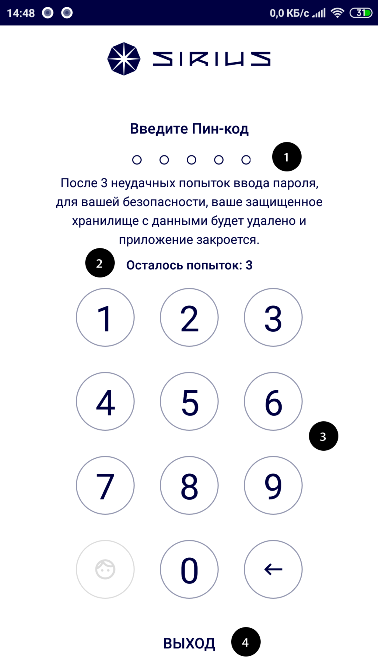
- 1.Место ввода Пин-кода
- 2.Указатель оставшехся попыток ввода
- 3.Клавиатура ввода Пин-кода
- 4.Кнопка "Выход"
1.2 Экран активности
На экране активности представлены области действия
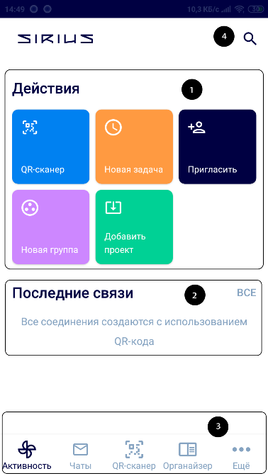
1.2.1 Область быстрого доступа
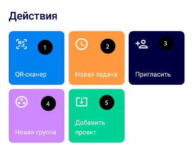
Из области быстрого перехода, вы можете в один клик перейти во все главные разделы приложения. Вы можете просканировать QR-код и принять приглашение через QR-сканер , создать новую задачу в органайзере, пригласить в секретный чат или поделиться своей визиткой, создать новый групповой чат, добавить новый проект
1.2.2 Область соединений
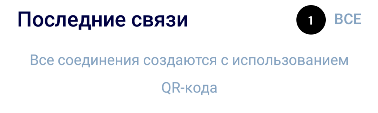
- 1.Кнопка "Все"
В этой области вы увидите 3 последних соединения ,при клике на кнопку 1 вы перейдете на экран всех соединений.
Вы можете просмотреть свои соединения нажав на любое из них. После нажатия Вы перейдете в детальную карточку удостоверения или в детальную карточку верификации
1.2.3 Нижнее меню навигации
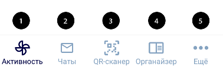
- 1.Экран Активности
- 2.Экран чатов
- 3.Экран сканирования QR
- 4.Экран органайзера
- 5.Экран профиля и настроек
1.2.4 Поиск
Вы можете найти участников экосистемы Sirius с включенным публичным доступом или зарегистрированных ботов воспользовавшись поиском. Введите в поле поиска желаемое имя. Найденные участники отобразятся в области контактов. Нажав на крестик в левом углу вы можете закрыть поиск. Нажатие на крестик в правом углу очистит поле 1 и область 2.
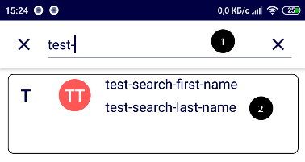
- 1.Поле ввода поисковой строки
- 2.Область контактов
После успешного поиска вы можете перейти к общению в личный чат с найденным контактом, нажав на него.
1.3 Документы
Для начала работы с хранилищем документов, вам достаточно отсканировать QR нажав на кнопку "Qr-сканер" в нижнем меню навигации или кнопку 1 в области быстрого доступа и принять приглашение для начала обмена ключами шифрования. Вы так же можете начать обмен ключами шифрования, перейдя по специальной ссылке открыв ее в приложении Sirius и приняв приглашение. Подробнее вы можете ознакомиться в разделе ### 1.4 Приглашение, обмен визитками
1.3.1 Удостоверения
Сообщения с удостоверением отображаются в чате. Для того чтобы перейти в детальную карточку удостоверения, нажмите кнопку "Open connection"(6) У удостоверений есть несколько статусов :
Не принято
Этот статус назначается удостоверению, которое пока еще не принято, то есть не нажата кнопка "Принять"(9) в детальной карточке соединения.
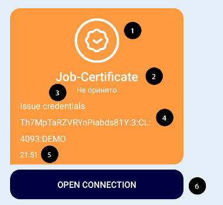
-
1.Значок соединения
-
2.Наименование удостоверения
-
3.Статус
-
4.Комментарий
-
5.Время создания
-
6.Кнопка "Open connection"
Принято
Этот статус назначается удостоверению, которое принято вами, то есть нажата кнопка "Принять"(9) в детальной карточке соединения.
Принятые удостоверения отображаются также в профиле , во всех соединениях и области последних соединений.
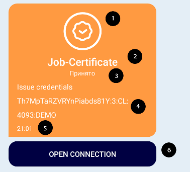
-
1.Значок соединения
-
2.Наименование удостоверения
-
3.Статус
-
4.Комментарий
-
5.Время создания
-
6.Кнопка "Open connection"
Отменено
Этот статус назначается удостоверению, которое по каким-либо причинам отклонено, в том числе либо другой участник, либо вы нажали кноку "Отмена"(8) в детальной карточке соединения.
При данном статусе карточка окраситься в красный цвет, а в детальной карточке удостоверения красным цветом будет выделен комментарий с ошибкой.
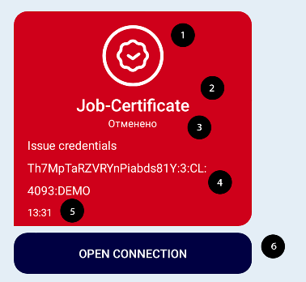
-
1.Значок соединения
-
2.Наименование удостоверения
-
3.Статус
-
4.Комментарий
-
5.Время создания
-
6.Кнопка "Open connection"
Вышло время ожидания
Внимание! Некоторые удостоверения имеют время отклика(например 2 минуты) с момента прихода , после этого времени удостоверение становится не активным,считается автоматически отмененным и не может быть просмотрено или принято.
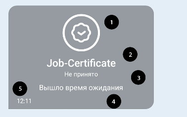
- 1.Значок соединения
- 2.Наименование удостоверения
- 3.Статус
- 4.Комментарий
- 5.Время создания
1.3.1.1 Карточка детальной информации удостоверения
На этом экране представлена детальная информация об удостоверении, такие как атрибуты, кто выдал, время выдачи , статус и тд.
По кнопке "Отмена"(8) вы можете отменить удостоверение, тогда оно перейдет в статус "Отменено". По кнопке "Принять"(9) вы можете принять удостоверение, оно запишется в защищенное хранилище и вы можете им воспользоваться при верификации. Вы можете найти ваши текущие удостоверения в профиле.
Внимание! Если удостоверение с таким ID уже существует, текущее удостоверение перезапишется.
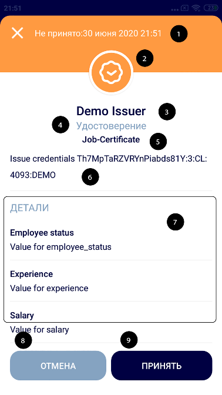
- 1.Время создания и статус соединения
- 2.Значок соединения
- 3.Наименование участника от которого пришло удостоверение
- 4.Тип соединения
- 5.Наименование удостоверения
- 6.Комментарий удостоверения
- 7.Область детальной информации об атрибутах соединения
- 8.Кнопка "Отмена"
- 9.Кнопка "Принять"
После принятия или отмены удостоверения, вы можете просмотреть детали запроса, отправленного вам, по кнопке "Детали"
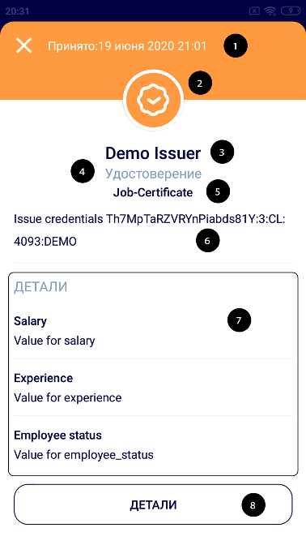
- 1.Время создания и статус соединения
- 2.Значок соединения
- 3.Наименование участника от которого пришло удостоверение
- 4.Тип соединения
- 5.Наименование удостоверения
- 6.Комментарий удостоверения
- 7.Область детальной информации об атрибутах соединения
- 8.Кнопка "Детали"
При статусе "Отменено" карточка окраситься в красный цвет, а в области детальной информации(7) красным цветом будет выделен комментарий с ошибкой
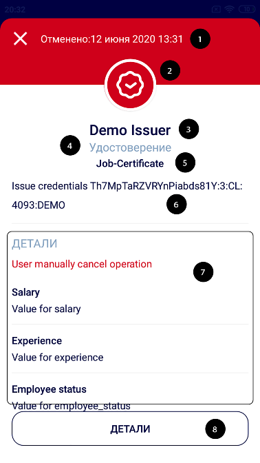
-
1.Время создания и статус соединения
-
2.Значок соединения
-
3.Наименование участника от которого пришло удостоверение
-
4.Тип соединения
-
5.Наименование удостоверения
-
6.Комментарий удостоверения
-
7.Область детальной информации об атрибутах соединения
-
8.Кнопка "Детали"
Экран детали запроса
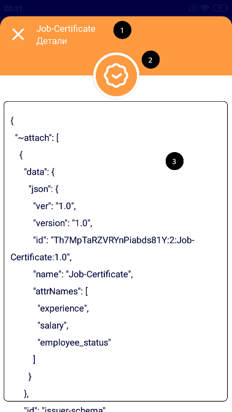
- 1.Наименование удостоверения
- 2.Значок соединения
- 3.Детальная информация запроса
1.3.2 Верификационная карточка
Сообщения с верификационной карточкой отображаются в чате. Для того чтобы перейти в детальную карточку верификации, нажмите кнопку "Open connection"(6) У верификационных карточек есть несколько статусов :
Верификация не пройдена
Этот статус назначается карточке, котороя пока еще не принята, то есть не нажата кнопка "Принять"(9) в детальной карточке верификации, либо нажата кнопка "Отмена"(8) в детальной карточке верификации
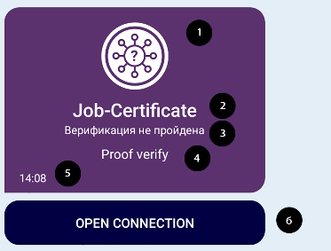
- 1.Значок соединения
- 2.Наименование удостоверения
- 3.Статус
- 4.Комментарий
- 5.Время создания
- 6.Кнопка "Open connection"
Если верификационная карточка по каким-либо причинам отклонена, в том числе либо другой участник, либо вы нажали кноку "Отмена"(8) в детальной карточке верификации, карточка окрасится в красный цвет, а в детальной карточке верификации красным цветом будет выделен комментарий с ошибкой.
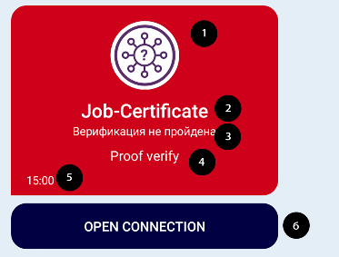
-
1.Значок соединения
-
2.Наименование удостоверения
-
3.Статус
-
4.Комментарий
-
5.Время создания
-
6.Кнопка "Open connection"
Верификация пройдена
Этот статус назначается верификационной карточке, которая принята вами, то есть нажата кнопка "Пройти верификацию"(9) в детальной карточке верификации.
Принятые карточки отображаются также во всех соединениях и области последних соединений.
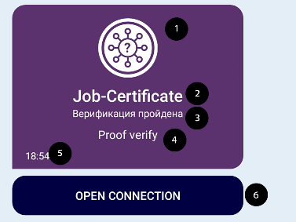
-
1.Значок соединения
-
2.Наименование удостоверения
-
3.Статус
-
4.Комментарий
-
5.Время создания
-
6.Кнопка "Open connection"
Вышло время ожидания
Внимание! Некоторые удостоверения имеют время отклика(например 2 минуты) с момента прихода , после этого времени удостоверение становится не активным,считается автоматически отмененным и не может быть просмотрено или принято.
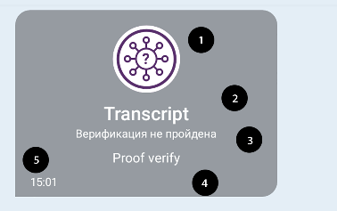
- 1.Значок соединения
- 2.Наименование удостоверения
- 3.Статус
- 4.Комментарий
- 5.Время создания
1.3.2.1 Карточка детальной информации верификации
На этом экране представлена детальная информация о запрашиваемых данных для верификации , в ней вы увидите такие параметры как атрибуты, кем выдано, время выдачи , статус и тд.
По кнопке "Отмена"(8) вы можете отменить верификацию, тогда она перейдет в статус "Верификация не пройдена". Напротив каждого атрибута будет выведен значок :
- зеленый - значит у вас в хранилище есть эти данные
- красный - значит у вас в хранилище не хватает этих данных
Если в вашем хранилище достаточно данных для верификации то по кнопке "Пройти верификацию"(9) вы можете отослать запрашиваемые у вас данные.
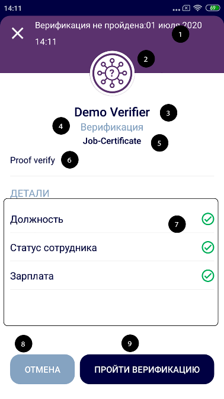
- 1.Время создания и статус соединения
- 2.Значок соединения
- 3.Наименование участника от которого пришло удостоверение
- 4.Тип соединения
- 5.Наименование удостоверения
- 6.Комментарий удостоверения
- 7.Область детальной информации об атрибутах соединения
- 8.Кнопка "Отмена"
- 9.Кнопка "Принять"
Если в вашем хранилище недостаточно данных для прохождения верификации вам будет выведен экран с описанием тех атрибутов, которых не хватает для успешного прохождения верфикации. Вы можете посмотреть детали запроса по кнопке "Детали"(8) или нажать "Отмена"(9), карточка перейдет в статус "Верификация не пройдена"
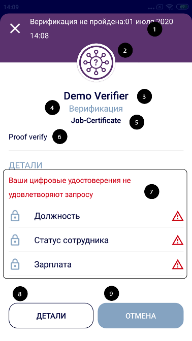
- 1.Время создания и статус соединения
- 2.Значок соединения
- 3.Наименование участника от которого пришло удостоверение
- 4.Тип соединения
- 5.Наименование удостоверения
- 6.Комментарий удостоверения
- 7.Область детальной информации об атрибутах соединения
- 8.Кнопка "Детали"
- 9.Кнопка "отмена"
После прохождения или отмены верификации, вы можете просмотреть детали запроса, отправленного вами, по кнопке "Детали".
Если верификация не пройдена в области детальной информации(7) появится комментарий с ошибкой.
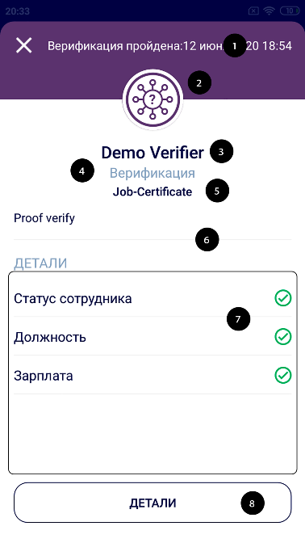
-
1.Время создания и статус соединения
-
2.Значок соединения
-
3.Наименование участника от которого пришло удостоверение
-
4.Тип соединения
-
5.Наименование удостоверения
-
6.Комментарий удостоверения
-
7.Область детальной информации об атрибутах соединения
-
8.Кнопка "Детали"
Экран детали запроса
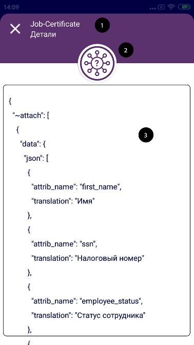
- 1.Наименование удостоверения
- 2.Значок соединения
- 3.Детальная информация запроса
1.3.3 Все соединения
На экране Соединений вы увидите все ваши соединения.
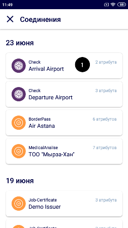
Вы можете просмотреть свои соединения нажав на 1. После нажатия на карточку Вы перейдете в детальную карточку соединения c удостоверением или верификационой карточкой
Если вы хотите просмотреть только действующие удостоверения перейдите в профиль.
Для удобства пользования все ваши соединения сгруппированы по дате создания.
1.3.3.1 Карточка списка соединения
На карточке соединения вы увидите значок соедиения 1, обозначающий тип соединения удостоверение или верификационную карточку Поле 2 обозначает с кем из контактов это соединение, поле 3 обозначает наименование документа, и поле 4 указывает какое количество аттрибутов внутри соединения.
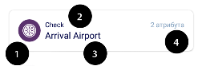
- 1.Значок соединения
- 2.Наименование контакта
- 3.Наименование документа
- 4.Количество атрибутов внутри соединения
1.4 Приглашение, обмен визитками
Вы можете создавать секретные чаты с вашими контактами. Для этого нужно либо принять приглашение, либо отправить. Вы можете совершить обмен визитками, точно также сканировав QR(1) и добавить контакт в вашу телефонную книгу
1.4.1 Отправить приглашения
Отправить приглашения можно несколькими способами:
1)Через область быстрого доступа нажав на иконку (3) "Пригласить"
2)Через кнопку "Пригласить"(2) в области меню личного чата на вкладке "Чаты"
3)Через личный чат , открыв меню личного чата и выбрав отправить приглашение в секретный чат
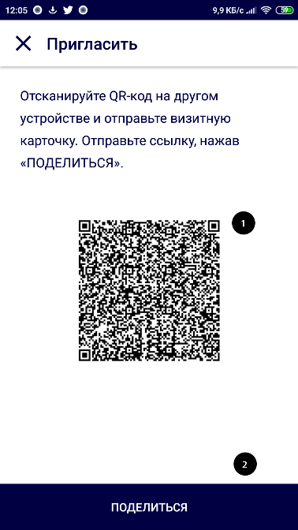
- 1.Qr-код приглашения
- 2.Кнопка "Поделиться"
Нажав на кнопку поделиться вы можете отправить ссылку-приглашение другому участнику посредством разных каналов связи, таких как СМС, интернет-мессенджеры и тд.
После сканирования или перехода по ссылке другим участником, он должен принять приглашение. Дождитесь когда у вас появиться экран с секретным чатом с этим участником, либо если вы вышли из экрана сканирования, новый чат появиться в списке чатов.
Можете начинать общаться!
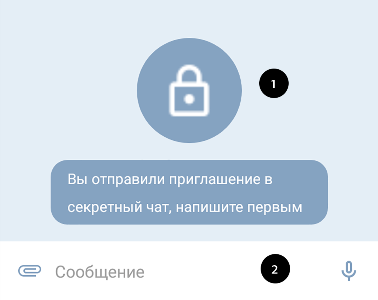
- 1.Приветственное сообщение
- 2.Поле ввода сообщения
Работа с секретными чатами описана в разделе Секретные чаты
1.4.2 Принять приглашение
Для того чтобы принять приглашение вам нужно открыть сканер Qr-кода в нижнем меню навигации или кнопку 1 в области быстрого доступа.
Затем наведите на QR-код приглашения.
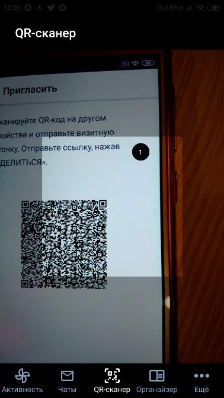
- 1.Область сканирования
Если QR-код считается успешно - откроется окно секретного чата. Нажмите кнопку подтвердить (2).
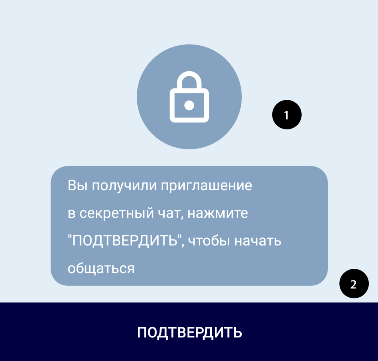
- 1.Приветственное сообщение
- 2.Кнопка "Подтвердить"
Кнопку (2) можно нажать один раз, после чего она станет недоступна.
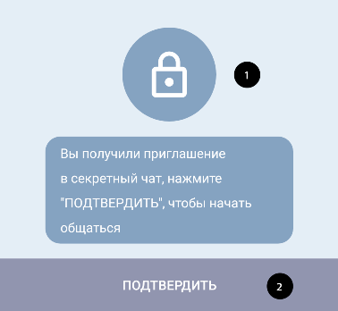
- 1.Приветственное сообщение
- 2.Кнопка "Подтвердить"
Дождитесь когда поле ввода (2) станет доступным а приветственное сообщение(1) изменится. Можете начинать общаться!
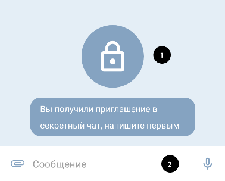
- 1.Приветственное сообщение
- 2.Поле ввода сообщения
Работа с секретными чатами описана в разделе Секретные чаты
1.5 Боты
Виртуальные помощники, подскажут вам что делать
2. Мессенджер
Sirius можно использовать как стандартный мессенджер, вы так же можете отправлять сообщения, аудио-сообщения , видео, фото и файлы. Для начала работы с чатами нажмите кнопку "Чаты" в нижнем меню навигации
Экран "Чаты" состоит из верхнего меню(1), Области вкладок(2) и Области экрана вкладки(3)
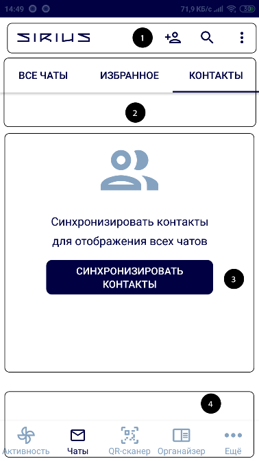
- 1.Верхнее меню
- 2.Область вкладок
- 3.Области экрана вкладки
- 4.Нижнее меню навигации
2.1 Верхнее меню
В верхнем меню вы можете выбрать одно из действий:
- Пригласить контакт в секретный чат, см. раздел "Приглашение, обмен визитками"
- Найти контакт через поиск, см. раздел "Поиск"
- Создать новый групповой чат, выбрав соответствующий пункт в правом меню ,см. раздел ["Групповые чаты"](#24-групповые чаты)
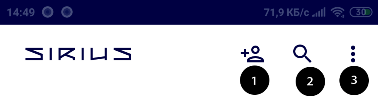
- 1.Кнопка "Пригласить"
- 2.Кнопка "Поиск"
- 3.Области экрана вкладки
- 4.Меню
2.2 Область вкладок
2.2.1 Все чаты
Здесь расположены все ваши чаты, личные, групповые и секретные, отсортированные по дате последнего сообщения.
Карточка списка чата
Справа расположен статус(5) если последнее сообщение от вас, количество непрочитанных сообщений и дата последнего сообщения(7).
Если чат секретный рядом с наименованием чата(3) появится иконка замочка(2).
Если контакт онлайн рядом с аватаром(1) появиться зеленый указатель онлайн
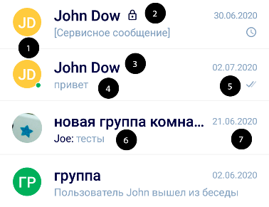
- 1.Аватар с иконкой онлайн
- 2.Иконка секретного чата
- 3.Наименование чата
- 4.Последнее сообщение
- 5.Статус последнее сообщение
- 6.Групповое последнее сообщение
- 7.Дата последнего сообщения
2.2.2 Избранное
Здесь расположены ваши личные чаты,которые вы добавили в избранное, отсортированные по дате последнего сообщения.
Чтобы добавить или удалить из избранного , см. раздел Добавить, удалить из избранного
2.2.3 Контакты
Здесь расположены ваши контакты. Если вы не синхронизировали контакты, вы можете сделать это нажав на кнопку "Синхронизировать контакты"
Вы также можете добавить контакт через обмен визитками, см. раздел Приглашение, обмен визитками
2.3 Личные чаты
Личные чаты предназначены для общения с одним контактом. Вся переписка хранится только локально, ни у кого нет доступа к вашим сообщения кроме вас.
Можно обмениваться файлами и аудиосообщениями, фото и видеофайлами.
Для начала общения синхронизируйте контакты на вкладке "Контакты" или найдите через "Поиск" нужный вам контакт.
Нажмите на контакт. Можете начинать общение!
2.3.1 Экран чата
В верхнем меню(1) расположены наименование чата, аватар и меню, через которое вы можете совершить различные действия выбрав соответствующий пункт меню.
В области сообщений(2) будут появляться ваши сообщения и сообщения ваших собеседников.
Через область отправки(3) вы можете отправить текстовое сообщение, аудио-сообщения, фото видео и файлы.
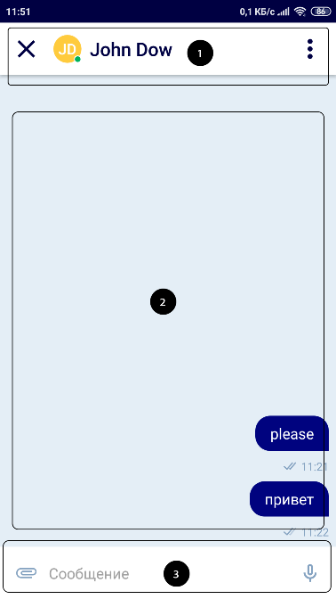
- 1.Верхнее меню
- 2.Область сообщений
- 3.Область отправки
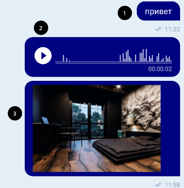 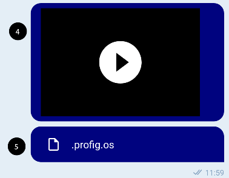
- 1.Текстовое сообщение
- 2.Аудио сообщение
- 3.Фото сообщение
- 4.Видео сообщение
- 5.Файловое сообщение
Меню
Добавить удалить из избранного
Вы можете добавить чат в избранное или удалить из него. Избранный чат появиться на вкладке "Избранное"
Пригласить в секретный чат
Вы можете пригласить в секретный чат данного пользователя, см. раздел "Приглашение, обмен визитками"
Удалить переписку
Вы можете полностью удалить все сообщения с данным пользователем. Все сообщения удаляться , а данный чат удалится из списка всех чатов.
Внимание! Данное действие необратимо. Вы не сможете восстановить удаленные сообщения.
Отправка текстового сообщения
Чтобы отправить текстовое сообщение, введите текст в поле ввода(2) и нажмите кнопку "Отправить"(3)
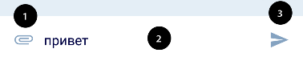
- 1.Кнопка "Прикрепить файл"
- 2.Поле ввода сообщения
- 3.Кнопка записи
Отправка аудио сообщения
Чтобы отправить аудио-сообщение, зажмите и долго держите кнопку "Начать запись".
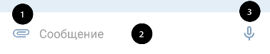
- 1.Кнопка "Прикрепить файл"
- 2.Поле ввода сообщения
- 3.Кнопка записи
Прозвучит звуковой сигнал, означающий начало записи. Продолжайте удерживать для записи, в поле для записи(1) будет указана продолжительность вашей записи а кнопка записи(2) увеличится.
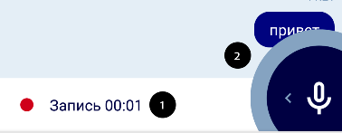
- 1.Поле для записи
- 2.Кнопка записи
Отпустите кнопку записи, если хотите отправить запись, запись отправится автоматически. Если вы передумали, проведите не отпуская кнопку до конца экрана.
- 1.Кнопка записи
Запись остановится, и вы сможете выбрать отправить(3) или удалить(1), нажав соответствующие кнопки .
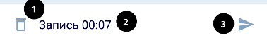
- 1.Кнопка удаления
- 2.Поле записи
- 3.Кнопка отправки
Вимание! Максимальная продолжительность записи 2 минуты. После окончания 2х минут, запись закончится и автоматически отправится.
Отправка фото,видео или файла
Чтобы отправить фото или видео нажмите кнопку "Прикрепить файл" в области отправки. Выберите что вы хотите прикрепить файл, фото или видео - откроется файловый менеджер, фото или видео-камера соотвественно. Выберите файл. файл автоматически загрузится и отправится другому участнику.
2.4 Групповые чаты
Групповые чаты предназначены для общения с группой контактов. Вся переписка хранится на сервере, вы не пропустите ни одного сообщения в группе.
Для создания группового чата вы можете воспользоваться областью быстрого доступа на экране "Активности" , нажав кнопку новая группа(4) либо зайдите в верхнее меню экрана "Чаты" и выберете пункт "Новая группа". Можно обмениваться файлами и аудио-сообщениями, фото и видеофайлами.
Для общения, отправки сообщений, фото и видео файлов см. раздел Экран чата
2.5 Секретные чаты
Секретные чаты предназначены для общения с одним контактом. Вся переписка хранится только локально, ни у кого нет доступа к вашим сообщения кроме вас. Все сообщения передаются по защищеному каналу связи. Канал защищен от разного рода хакерских атак, таких как Man in the middle (MITM) и др. Можно обмениваться файлами и аудио-сообщениями, все файлы отправленные в секретных чатах шифруются специальным алгоритмом и удаляются с сервера, как только вы их загрузили на устройство.
Для общения, отправки сообщений, фото и видео файлов см. раздел Экран чата
3. Органайзер
Для организации работы в команде хорошо подойдет удобный органайзер с возможностью назначать наблюдателей, срок и напоминание. Для начала работы с органайзером нажмите кнопку "Органайзер" в нижнем меню навигации
3.1 Задачи
Вы можете создавать задачи из области создания задачи(1), редактировать , просматривать и комментировать задачи, нажав на одну из них в списке задач(3)
Экран органайзера
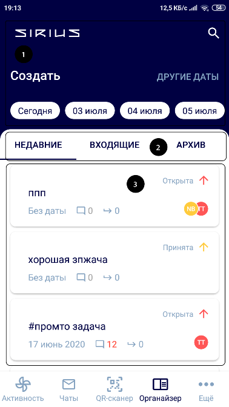
- 1.Область создания задачи
- 2.Область вкладок задач
- 3.Область списка задач
Карточка списка задачи
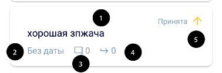
- 1.Наименование задачи
- 2.Даты окончания задачи
- 3.Количество комментариев
- 4.Количество подзадач
- 5.Приоритет и статус задачи
Можно создать задачи а также подзадачи внутри задач, прикреплять файлы, оставлять комментарии , переносить задачи в проекты.
3.1.1 Создание новой задачи
Для создания новой задачи выберите одну из дат на Экране органайзера, вы перейдете на экран создания новой задачи. Заполните необходимые поля. Поле наименование задачи(2) обязательное. Укажите срок окончания задачи, выбрав его в календаре. Укажите приоритет задачи. Вы также можете сразу добавить задачу в существующий проект. Более детальное описание полей см. раздел Редактирование задачи
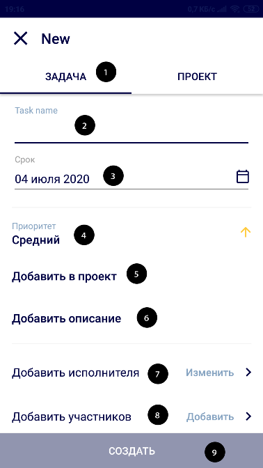
- 1.Вкладка Задача
- 2.Поле наименование задачи
- 3.Срок окончания задачи
- 4.Приоритет
- 6.Добавить в проект
- 7.Добавить исполнителя
- 8.Добавить участников
- 9.Кнопка создать
После заполнения всех полей нажмите кнопку Создать. Задача автоматически появится у всех участников и исполнителя, а также им прийдет соответствующее уведомление, если у них в настройках стоит переключатель "Уведомление о задачах"
3.1.2 Создание новой подзадачи
3.1.3 Добавление задачи в проект
Если у вас еще нет ни одного проекта, вы можете создать его , см. раздел ### 3.2.1 Создание нового проекта
на Экране задачи выберите Добавить в проект. Откроется Экран добавления в проект, выберите один из проектов, задача автоматически добавится в выбранный проект.
Экран добавления в проект
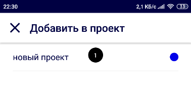
3.1.4 Редактирование задачи
Чтобы отредактировать задачу, нажмите на поле которое вы хотите отредактировать. Все изменения сохраняются автоматически после редактирования.
Экран задачи
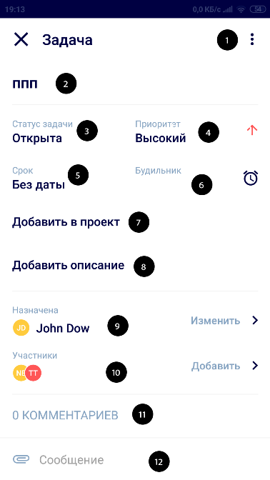
- 1.Меню задачи
- 2.Наименование задачи
- 3.Статус задачи
- 4.Приоритет задачи
- 5.Срок окончания задачи
- 6.Время напоминания
- 7.Проект,к которому относится задача
- 8.Длинное описание задачи
- 9.Исполнитель задачи
- 10.Наблюдатели или участники задачи
- 11.Область комментариев
- 12.Область ввода комментария или файла
Меню задачи состоит из пунктов Закрыть задачу и Удалить задачу, доступных только создателю задачи. Если Вы создатель задачи, вы можете закрыть задачу, тогда она перейдет в архив и отобразится во вкладке "Архив". или удалить задачу, тогда задача удалится у вас, всех участников и у исполнителя.
Для редактирования наименования задачи нажмите на поле (2), вы перейдете на экран редактирования наименования. Введите наименование в поле ввода(1). Нажмите кнопку Сохранить для сохранения или крестик слева для закрытия экрана.
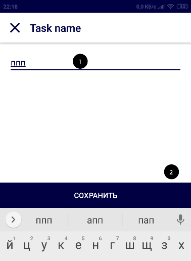
- 1.Поле ввода
- 2.Кнопка сохранить
Статус задачи - это статус в котором находится задача.
У задачи есть 3 разных приоритета Высокий, Средний , Низкий. Выберите один из них в поле Приоритет задачи(4)
Срок окончания задачи - выберите срок окончания в календаре, если стоит напоминание, оно сработает в день окончания во время которое указано в будильнике.
Время напоминания - установите время напоминания чтобы не забыть о задаче, подробнее см. раздел 3.4 Напоминание
Для редактирования описания задачи нажмите на поле (8), вы перейдете на экран редактирования описания, аналогичный экрану редактирования наименования. Введите наименование в поле ввода(1). Нажмите кнопку сохранить(2) для сохранения или крестик слева для закрытия экрана.
Чтобы отредактировать исполнителя задачи, нажмите на поле Исполнитель задачи(9), откроется экран Добавить исполнителя. Вы можете выбрать только одного исполнителя для задачи. Нажмите на контакт, он автоматически сохранится.
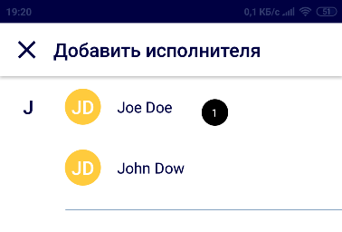
- 1.Имя и аватар исполнителя
Чтобы отредактировать участников задачи, нажмите на поле Наблюдатели или участники задачи(10), откроется экран Участники. Вы можете выбрать несколько участников для задачи. Все они могут просматривать, редактировать, комментировать и прикреплять файлы к задачам.
Удалить задачу может только создатель задачи!
Нажмите на контакт, он автоматически сохранится.
- 1.Имя и аватар участника
- 2.Галочка
- 3.Кнопка добавить
Добавить комментарий и прекрепить файл с помощью Области ввода комментария или файла(12) см. раздел 3.3 Входящие, Комментарии к задачам
3.2 Проекты
Для организации пространства вы можете перетащить задачи в проекты, это ваши личные папки в которых хранятся ваши задачи.Проекты недоступны для других участников задач.
3.2.1 Создание нового проекта
Для создания проекта , нажмите на любую из дат в области создания на экране органайзера.
Выберите вкладку Вкладку Проект(1). Заполните поле имя проекта. Также вы можете назначить цвет проекту, он будет высвечиваться в карточке списка задач. Можно сразу перенести задачи в проект кнопкой добавления задачи (4) или удалить ненужные крестиком на списке добаленных задач(5).
Для создания проекта нажмите кнопку Создать.
- 1.Вкладка проект
- 2.Наименование проекта
- 3.Цвет проекта
- 4.Кнопка добавления задачи
- 5.Список добавленных задач
- 6.Кнопка создать
3.3 Входящие, Комментарии к задачам
Задачи которые назначают на вас приходят во входящие, их можно принять или переназначить на другого участника и для удобства перенеcти в проект.
К задачам можно оставлять комментарии и прикреплять файлы, фото и видео
- 1.Количество комментариев
- 2.Фото комментарий
- 3.Текстовый комментарий
Напишите комментарий в поле вода(2) и нажмите кнопку отправить(3) для текстового комментария. Для отправки файла нажмите кнопку "Прикрепить файл"(1), выберите файл . Выбранный файл отправится и прикрепится к задаче автоматически.
- 1.Кнопка Прикрепить файл
- 2.Поле ввода
- 3.Кнопка отправки
3.4 Напоминание
Чтобы не пропустить задачу вы можете поставить напоминание для этой задачи на определенное время , оно прозвучит в дату окончания(5) во время которое вы поставили
на Экране задачи выберите поле Время напоминания(6). Откроется выбор часов и минут. Выберите нужное вам время , напоминание сохранится автоматически.
4. Профиль и настройки
В профиле хранятся ваши личные данные и документы. Вы можете их просматривать и изменять. Для начала работы с вашим профилем нажмите кнопку "Ещё" в нижнем меню навигации
4.1 Профиль
Нажав на кнопку 1 вы можете перейти в настройки. Вы можете изменить свой аватар нажав на иконку 2, выбрав из галерии или фотоаппарата. В области 3 располагается ваше текущее Имя и Фамилия , изменить вы их можете перейдя в настройки по кнопке 1. В области 4, находятся все ваши текущие документы хранящиеся в локальном защищенном хранилище, вы можете просмотреть их, нажав на любой из них.
- 1.Настройки
- 2.Аватар
- 3.Имя Фамилия
- 4.Область документов
4.2 Настройки
Вы можете изменять свое имя и фамилию в области 1, нажав на соотвествующее поле и ввести желаемое имя и фамилию.Здесь же вы можете изменить видимость своего аккаунта для дргуих участников экосистемы Sirius. При выключенном чекбоксе "Публичный аккаунт" вас не смогут найти при помощи поиска, но вы все еще будет доступны для участников, у которых вы есть в контактах или телефонной книге.
Настройки уведомлений в области 2 отвечают за уведомления присылаемые вам в рамках экосистемы. Если вы не хотите получать уведомлений о новых сообщения или задачах отключите соответствующие переключатели.
Область 3 отвечает за настройки безопасности. Через какое время заправшивать Пин-код придуманный на этапе авторизации. При выборе "При каждом переходе" пинкод будет запрашиваться даже если вы свернете приложение или при выключении экрана.
нажав кнопку 4 вы совершите выход из текущего профиля. Все ваши данные сохраняются до следующей авторизации.
Внимание! Все настройки сохраняются автоматически после изменения
- 1.Область настроек аккаунта
- 2.Область настроек уведомлений
- 3.Область настроек безопасности
- 4.Кнопка выхода
5. Как...
5.1 Создать секретный чат
Просканируйте QR-код в соответстии с разделом Принять приглашение или отправьте приглашение(см. раздел Приглашение, обмен визитками)
5.2 Отправить сообщение
Следуйте инструкциям описанным в Отправка текстового сообщения или Отправка файлов, фото или видео
5.3 Принять удостоверение
Следуйте инструкциям описанным в разделе Удостоверения
5.4 Пройти верификацию
Следуйте инструкциям описанным в разделе Верификационная карточка
5.5 Отправить визитку
Следуйте инструкциям описанным в разделе Приглашение, обмен визитками